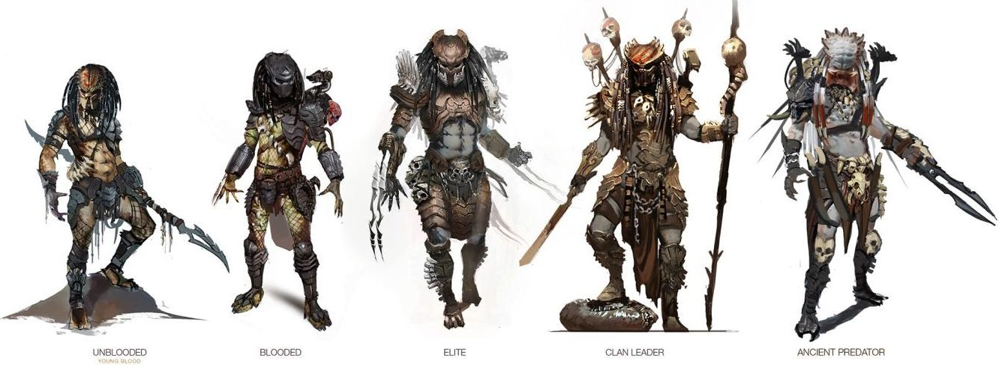
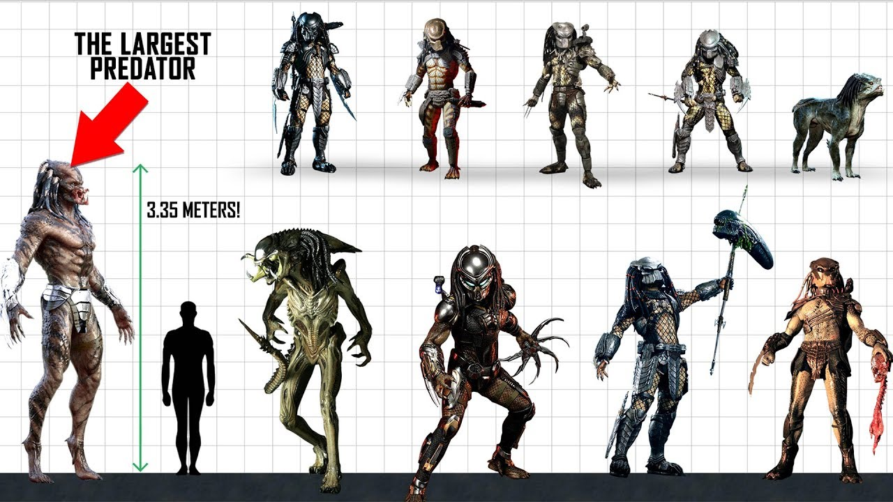
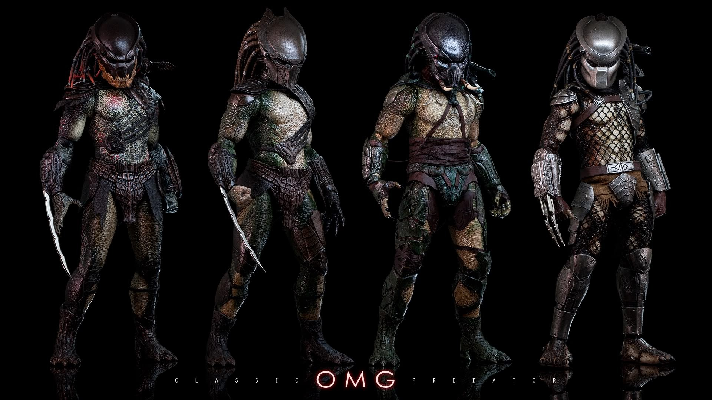
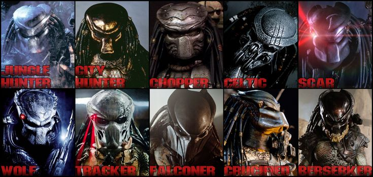
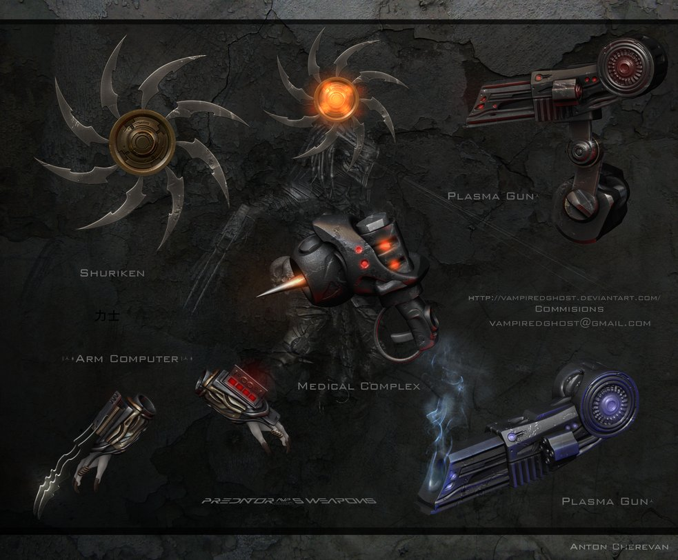
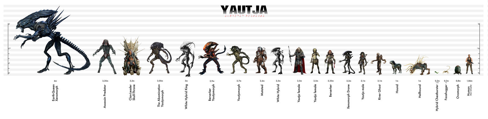
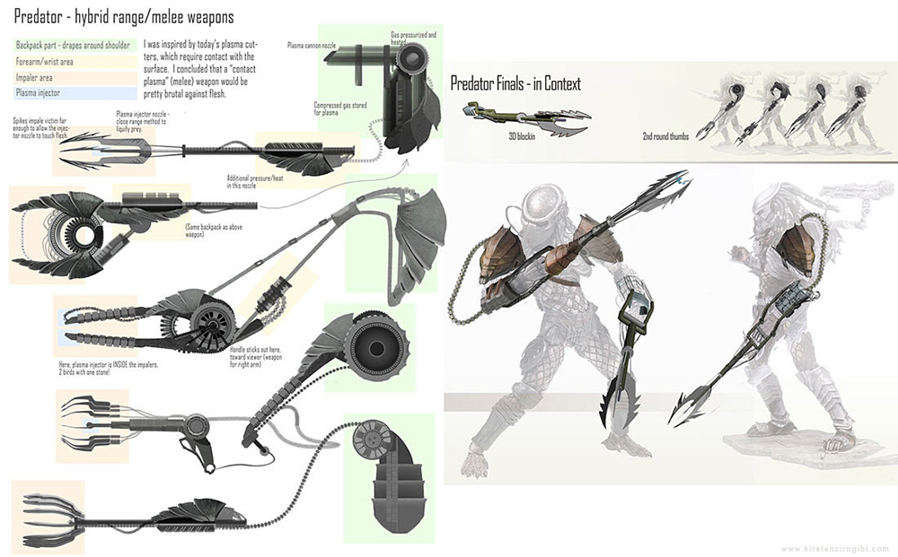
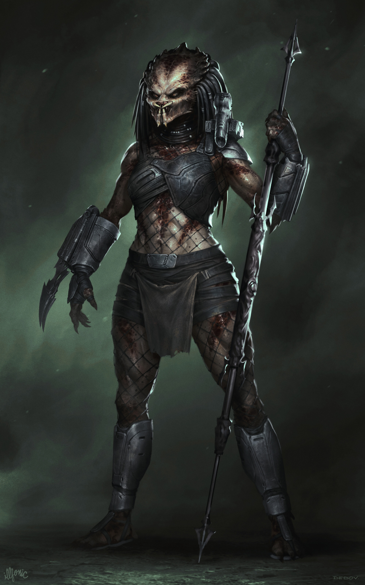

Detailed Overview of the Predator (Yautja) Species
Appearance
The Predators (or Yautja) are a fearsome, distinctive alien species that appear nightmarish to humans:
- Body Structure: They have a humanoid form but are much larger and more muscular than humans, standing around 7 to 8 feet tall and weighing several hundred pounds.
- Skin: Their skin is rough, with a texture often resembling scales or exoskeletons, ranging in color from brownish to greenish hues.
- Face: Their most distinctive facial feature is their wide, open mandibles, surrounded by four tentacle-like appendages, giving them a terrifying, insect-like appearance.
- Eyes: Their eyes are typically yellow or orange, lending them a sharp, predatory gaze.
- Hair: They have long, tubular dreadlock-like structures on their heads that are thick and seem to be made of keratin-like material.
- Armor: Predators wear armor made from advanced metal alloys and sometimes from the bones of their prey. This armor serves not only as protection but also as a symbol of rank and status.
Culture and Social Structure
- Hunting and Honor: Hunting is central to Yautja culture. It is not just a sport but a sacred activity that determines a warrior’s honor and status. Only worthy opponents are considered valid trophies.
- Rituals and Traditions: Predator hunts are conducted with strict rituals tied to the history and traditions of their clans. Young hunters are often accompanied by elder, more experienced warriors who teach them the rules of the hunt.
- Hierarchy: The Yautja society is highly hierarchical, determined primarily by the number of trophies collected and bravery displayed in combat. Older warriors, who boast numerous trophies and victories, are held in great respect and often assume leadership positions.
History and Background
- Ancient Origins: The Yautja's history spans millennia, and they have encountered numerous alien species throughout their existence. They have crossed paths with humanity and other advanced civilizations during their hunts.
- Inter-Species Conflicts: Over the centuries, the Yautja have engaged in bloody wars and hunts against many alien species. In the Alien universe, for example, they have long battled the Xenomorphs, whom they also regard as worthy trophies.
- Cross-Cultural Encounters: The Yautja have sometimes interacted with other species, adopting certain aspects of their cultures or leaving a mark on the cultures they encounter during their hunts.
Weapons and Technology
- Cloaking Device: One of the Predator's most terrifying tools is its cloaking device, allowing them to become nearly invisible and approach their targets undetected.
- Thermal Vision Helmet: Their advanced helmets provide multiple vision modes, including thermal vision, which is particularly useful for hunting in darkness or detecting warm-blooded creatures.
- Plasma Weapons: The shoulder-mounted plasma casters are the most iconic Predator weapons. These laser-guided weapons have tremendous destructive power and are used for long-range combat.
- Melee Weapons: Predators also use a variety of melee weapons, such as retractable wrist blades, energy spears, and chakram-like discs that can slice through opponents.
- Healing Devices: Predators possess advanced medical technology that allows them to quickly recover from injuries sustained in battle.
Behavior and Motivation
- Hunting Instinct: The Yautja's primary motivation is the hunt and the honor associated with it. They respect only those opponents who pose a worthy challenge, and the greatest honor lies in collecting trophies from such adversaries.
- Code of Honor: Predators live by a strict code of honor. They do not attack unarmed or defenseless prey, and they avoid hunting weaker opponents. If a warrior is defeated, they often choose to self-destruct to avoid disgrace.
- Respect for Adversaries: If a Predator's adversary proves their worthiness or bravery, the Predator may show respect, even sparing their life, or keeping a memento as a trophy to commemorate the encounter.
Gallery








Female Yautja (Predator) Overview
Physical Characteristics
Female Yautja are often larger and stronger than their male counterparts, giving them a distinct advantage in combat and hunting:
- Size and Strength: Typically larger and more muscular, females possess significant physical power.
- Armor and Weaponry: Like males, they wear advanced armor and use high-tech weapons, with potentially more ornate designs reflecting their status.
Cultural and Social Role
Female Yautja play crucial roles in their society, particularly in leadership and the continuation of their species:
- Hierarchy and Leadership: Females often take on leadership roles within their clans, respected for their strength and experience.
- Mating and Reproduction: Their selection of mates is highly selective, ensuring the strongest genes are passed on.
- Hunting Practices: They actively participate in hunts, following the same strict codes of honor as male Yautja.
Notable Appearances
Female Yautja have appeared in various expanded universe stories:
- Comics and Novels: Notable characters include "Machiko Noguchi" from the *Predator: Prey* novel and "Big Mama" from *Aliens vs. Predator: Deadliest of the Species*.
Behavior and Personality
Female Yautja are known for their strict adherence to Yautja honor and tradition:
- Honor and Tradition: They are deeply committed to upholding the Yautja code of honor.
- Tactics and Intelligence: They are highly intelligent and often lead hunts or train younger warriors.
Videos